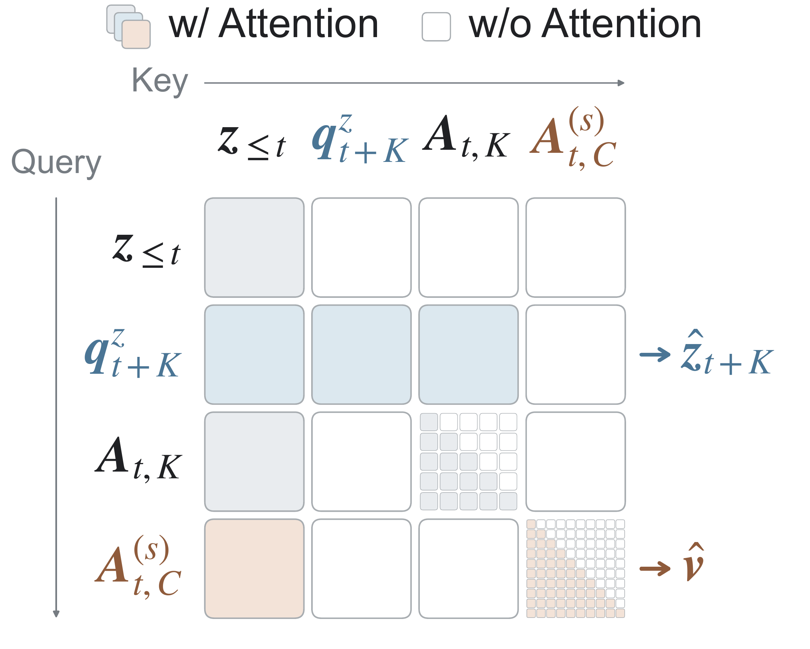
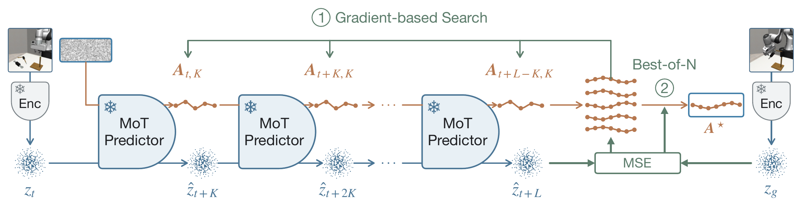

Abstract
Joint-embedding predictive architectures (JEPAs) learn compact latent world models without pixel reconstruction. Existing JEPA pipelines typically train visual representations and action-conditioned dynamics before adding a control policy or solver. We introduce LeWAM, an end-to-end JEPA for control with: (1) a joint training objective over next latent state prediction and action flow matching, and (2) an isotropic Gaussian constraint on the latent state, enabling a single model to support direct policy execution and efficient planning by evaluating sampled actions with its learned latent dynamics. Compared with prior JEPAs in visual planning, LeWAM improves success rate from 28.6% to 89.7% on contact-rich tasks and from 10.9% to 46.2% on long-horizon tasks, and plans 32.3× faster. On behavior cloning tasks in simulation and physical robots, LeWAM is also competitive with established methods. Interpretability analyses show that LeWAM learns control-relevant representations and action distributions effectively guiding test-time planning and control.
Joint World- and Action- Learning
Architecture details
Model architecture. A shared ResNet-18 encoder maps history, target, and goal images to 192-dimensional latent states. A mixture of transformers (MoT) predictor uses history latents to predict future states from clean actions and an action velocity field from noisy actions.
Integrating the velocity field generates action chunks. Goal and normalized remaining-horizon information condition only the action branch.
Training objective. We jointly train the encoder and predictor with latent prediction, action flow matching, and SIGReg regularization.
SIGReg encourages an isotropic Gaussian latent distribution.


Latent Joint Imaginations
Sample and refine plans through learned latent dynamics.

LeWAM alternates action sampling with latent-state prediction to build candidate plans. It refines the candidates through the frozen dynamics using terminal latent goal error and a proximity penalty, then selects the lowest-cost iterate.
Execute the first K planned actions and replan from the next observation.
Evaluation Protocol
Heterogeneous Simulated Environments
We evaluate control across ten simulated navigation and manipulation environments.

Visual Planning with LeWAM
Visual planning across ten simulated environments

Most tasks use a 25-step goal offset and a 50-action budget. Two-Room uses a 100-step goal offset and 150 actions, following LeWM. Error bars show one standard deviation. Cube success checks both the object and end-effector positions.
Long-horizon planning

Understanding LeWAM's Dynamics, Representations, and Actions
Latent representation probing
Across four tasks, action learning improves mean proprioception, action, and inverse-dynamics R² over LeWM by 0.21, 0.20, and 0.19.
| Model | SIGReg | Effective rank | Object R² | Proprio R² | Action R² (IDM) |
|---|---|---|---|---|---|
| LeWAM | Yes | 42.90 | 0.90 | 0.86 | 0.40 (0.75) |
| LeWAM | No | 10.94 | 0.88 | 0.85 | 0.38 (0.73) |
| LeWAM (MSE) | No | 6.96 | 0.66 | 0.86 | 0.36 (0.74) |
| LeWM | Yes | 94.20 | 0.95 | 0.80 | 0.29 (0.71) |
| LeWM | No | 16.23 | 0.00 | 0.00 | 0.00 (0.00) |
Action predicts the action chunk from the current latent state; parenthesized IDM scores use both current and future states.
Action prediction as an anti-collapse signal. Observed actions provide targets independent of the encoder. Without SIGReg, LeWAM retains decodable information; LeWM's Push-T probe scores are zero.

SIGReg. SIGReg improves object-state decodability and planning. Push-T planning gains 14.7 pp over direct control with SIGReg, versus 2.7 without it.
Visual encoder. Across four matched tasks, joint training reaches 86.7% direct success, versus 79.0% with frozen DINOv2 CLS.
Stochastic vs. MSE. MSE predicts a conditional mean; flow matching models multiple action modes and yields larger planning gains on all three tasks shown.
Isolating action-conditioned dynamics
Remove LeWAM's action head and plan with CEM using its latent dynamics. Cube success exceeds LeWM by 22.2 pp.
| Model | Push-T | Cube |
|---|---|---|
| LeWM (CEM) | 92.4 ± 1.2 | 63.8 ± 2.2 |
| LeWAM (CEM, action head removed) | 84.0 ± 1.3 | 86.0 ± 3.2 |
Visual Reconstructions and
Action-Conditioned Rollouts
Open-loop predictions use the same recorded actions for both models. Post-hoc decoders visualize frozen world models; reconstruction decodes each observed frame.
Behavior Cloning and Physical Robot Control
Task completion in simulation
| Method | DrawerCleanup | Transport | ToolHang | Average |
|---|---|---|---|---|
| Diffusion Policy | 54.7 ± 1.2 | 45.3 ± 9.0 | 84.7 ± 3.1 | 61.6 |
| LeWAM | 52.7 ± 5.0 | 61.3 ± 9.9 | 80.0 ± 3.5 | 64.7 |
Direct control from observation history, without a goal image.
Physical-robot control
Three tasks · 30 trials per method, per task.
| Method | Pick and Place T | Push-T | Tape Stack | Average | GFLOPs |
|---|---|---|---|---|---|
| Diffusion Policy | 19 / 30 | 16 / 30 | 0 / 30 | 38.9% | 270.0 |
| π0.5 | 14 / 30 | 3 / 30 | 9 / 30 | 28.9% | 3603.6 |
| LeWAM, frozen V-JEPA 2.1 | 15 / 30 | 12 / 30 | 5 / 30 | 35.6% | 270.2 |
| LeWAM, end-to-end | 16 / 30 | 8 / 30 | 6 / 30 | 33.3% | 270.2 |
13.3× fewer operations than π0.5 per action chunk.
A scene camera and a wrist camera provide observations for the seven-DoF robot. The robot executes joint targets at 30 Hz using action chunks from a remote inference machine. GFLOPs include all denoising steps for one action chunk.
Visual Reconstructions and
Action-Conditioned Rollouts
LeWAM, end-to-end
LeWAM, frozen V-JEPA 2.1
LeWAM, end-to-end
LeWAM, frozen V-JEPA 2.1
LeWAM, end-to-end
LeWAM, frozen V-JEPA 2.1
Post-hoc decoders visualize both LeWAM variants. Reconstructions decode each observed frame; predictions roll forward from the initial context under the recorded actions.